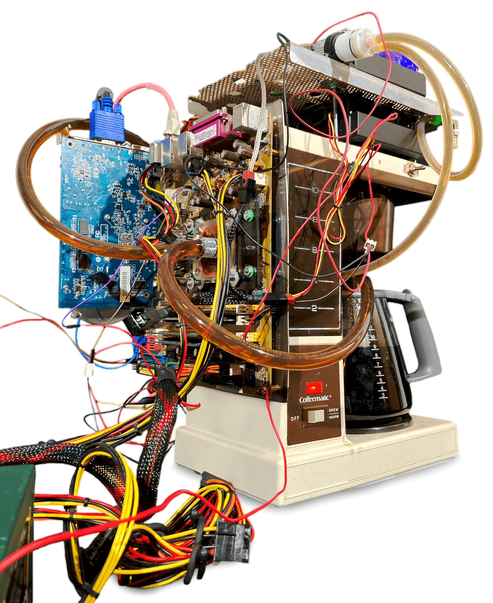
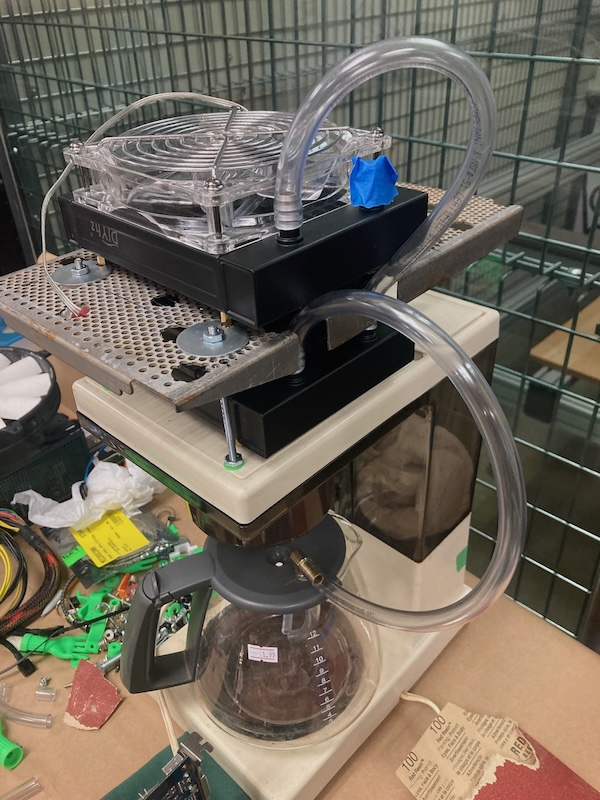
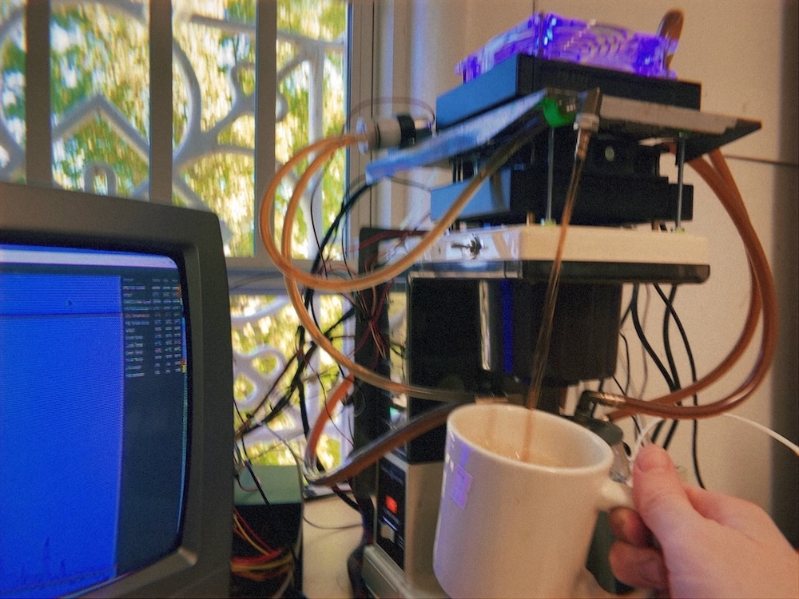
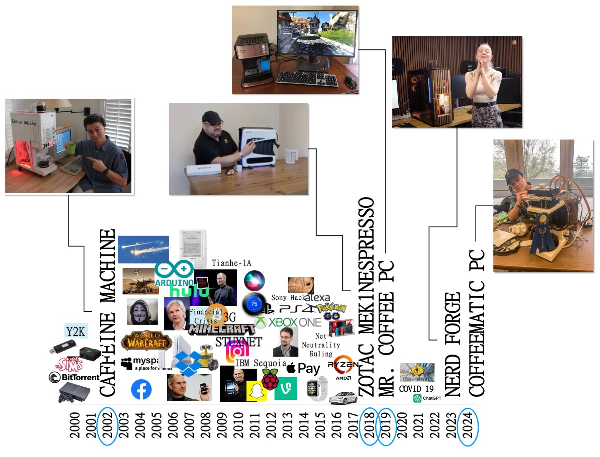
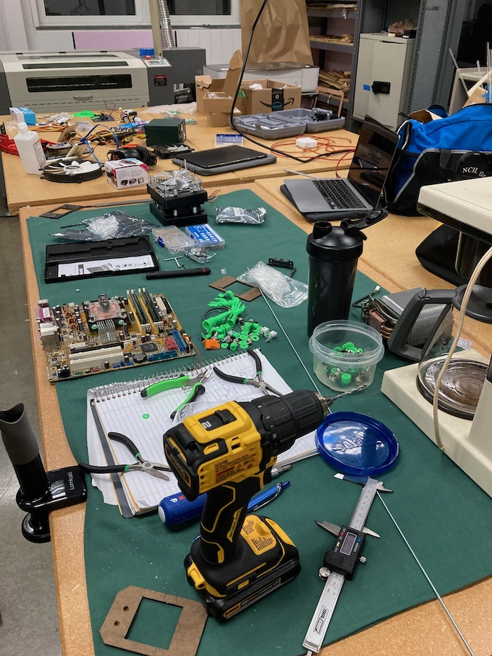

COFFEEMATIC PC
A coffee maker computer by Doug MacDowell artist
Sometime during winter 2024, I found myself at a thrift store. I was
staring at rows of appliances, wrapped in plastic and clinging to
life, trying to answer one question: which of these is the right
chassis for a retro gaming computer?
Driving home, I took corners carefully, checking that the General
Electric (GE) drip coffee maker I’d chosen was safe in the backseat.
The coffee maker's given name was Coffeematic. Circa 1980, it is boxy
yet athletic – unfazed by any considerations of future internet
connectivity. Best, it is perfect for being hacked.
Coffeematic is now Coffeematic PC – part gaming computer, part coffee
maker. A newly synthesized machine percolating processes well beyond
its original configuration.
Coffeematic PC is part of a lineage of coffee maker computers made
since 2002. I'll describe that fascinating lineage here, and how it inspired an
art exhibition called Sparklines
where hand-drafted data visualizations accompany Coffeematic PC.

Profound and poetically articulated. Elegant and assertive. Highly scaleable with dynamic acceleration. No. These do not describe Coffeematic PC or its peers (one of those phrases describes a bottle of wine.) A custom built computer can be basic and functional, or an elaborate, absurd, spinning piece of art. Coffeematic PC falls somewhere in that spectrum while also being nearly self-destructive.

This is how Coffeematic PC works. The computer is fully functional. The coffee maker is too, it percolates Java like a regular coffee maker. Very hot Java. Computers usually use fans or liquid cooling systems to reduce heat. Coffeematic PC uses the hot Java it brews to heat? cool? caffeinate? the computer. A pump takes the hot, caffenated slurry (~90C/194F) and circulates it thru two radiators sitting on top of Coffeematic PC's crown -> down to a central processing unit (CPU) tucked within an ASUS M2NPV-VM motherboard snugly strapped to Coffeematic PC's back. Java continues through an artery returning to Coffeematic PC's caraffe. The process repeats until Java is integrated with the user or the machine is powered off.

↑ Coffeematic PC has a dedicated pump to aggressively dispense Java for user.
CPU's are meant to be cool and Java hot. Despite circulating hot Java, Coffeematic PC does not crash. To understand more, I wrote command line code to gather data on Coffeematic PC every 5 seconds, and monitored Coffeematic PC for 75 minutes. The graph below shows the results. The machine is just barely non-destructive. Coffeematic PC's CPU, body, and circulatory system eventually find equilibrium. A warm 33C/91F - amazingly close to the temperature of the slurry that flows through you and me.

An important part of this project is the lineage of coffee maker
computers. Before discussing that,
this is how Coffeematic PC was made.
The build is a mix of discarded electronics and newly purchased
hardware, pumps, and radiators. The motherboard, CPU, RAM, and
graphics card are from the mid 2000's and were sourced from a
recycling center. This is a parts list for Coffeematic PC.
- GE Coffeematic Coffee Maker 10 Cup
- ASUS M2NPV-VM AM2 Motherboard
- AMD Athlon II X4 640 3 GHz Quad-Core OEM/Tray Processor
- Hynix 1GB 2Rx8 PC2-5300U-555-12 PC2-DDR2 RAM
- Acer SA100 240 GB 2.5" Solid State Drive
- HIS H467QR1GH Radeon HD 4670 1 GB Video Card
- Antec Earthwatts Green 430 W 80+ Bronze Certified ATX Power Supply
- Linux Mint Operating System
- CPU Water Cooling Block for Intel
- Water Cooling Computer Radiator
- 12V Mini Food Grade Self Priming Diaphragm Fresh Water Transfer Pump
- Waterproof Toggle Switch 12V
- Brass Hose Barb 3/8" to 3/16"
- Brass Hose Barb, 5/16" to 3/16"
- 90 Degree Elbow Hose Barb 3/16"
- 90 Degree Elbow Hose Barb 3/8" 10mm
- 90 Degree Elbow Hose Barb 5/16" 8mm
- Food Grade Silicon Tubing 3/16" ID x 5/16" OD
- Food Grade Vinyl Tubing 5/16" ID - 7/16" OD
I spent about a month designing and building Coffeematic PC. The build traverses time. The coffee maker is from the late 1970's, the motherboard, CPU, and graphics card from the 2000's, and the SSD, operating system, and hardware from the today's (2020's). The General Electric coffee maker needed only a minor repair of replacing a small vinyl tube that had cracked. It takes awhile to brew a pot of coffee, but once it is brewed... it tastes like coffee made from a plastic coffee maker from the 1970's. I'lllll drink it!
Video: Making a Coffee Maker Computer
A few clips of how Coffeematic PC was built. Watch on YouTube
The lineage of coffee maker computer builds spans 22 years with a curious 15 year gap in the middle. I'm not the first person to synthesize a coffee maker and a computer. But, I think I am the first to use hot Java as a cooling method. The graph below shows the lineage of coffee maker computers. There are a total of 5. In 2002 Nick Pelis built the first ever coffee maker computer named The Caffeine Machine. Then, the builds went cold for 15 years until 2018, when a person named Ali “THE CRE8OR” Abbas collaborated with a company named Zotac to make the Zotac Mekspresso to feature in a trade show. One year after in 2019, a man whose username is Logarythm made the Mr. Coffee PC. This unassuming build is perhaps my favorite. 5 years later, after COVID-19, NerdForge, a youtube channel specializing on fun builds, built a "PC that makes coffee". During this time I was making Coffeematic PC.

Why is there a 15 year gap between the first coffee maker computer
and the rest? Were people tired of drinking coffee?
I don't think so. We're people tired of building fun computers? Were
they distracted? Could they not afford it? I'm not sure. But something
is wrong. There should be a steady output of absurd coffee maker
computers being made. What happened in those 15 years? To look into it
I created the graph above. It shows a timeline of coffee maker
computers along with important events compiled from the
The Timeline of Computer History
from the Computer History Museum. Of course, there are many important
things that happened worldwide between 2002 and 2018 like war, natural
disasters, financial crisis, shootings, refugee crisis, and the
apocalypse in 2012 determined by the end of the Mayan calendar. Its
too much to capture in this dinky graph. But maybe focusing on tech,
and the culture of tech, can reveal something about this large gap in
absurd creativity. Do you see any trends?

Coffeematic PC inspired an art exhibition called Sparklines. In Sparklines I elaborate on the curious 15 year gap in coffee maker computers being built and create data portraits of a group of people I call artist-hackers. The work is all drawn by hand using drafting tools and a vintage lettering kit. Check it out at the link above! Do you know of any other coffee maker computer builds that I missed?